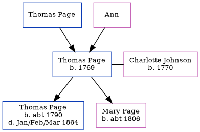

Thomas Page 1769 -
[ Home ] | [ Calendar ] | [ Surnames Index ] | [ Errors ] | [ Family History ]The child of Thomas Page and Ann, Thomas Page, the 4 times great-grandfather of Nigel Horne, was born in Newington, Kent, England in 17691,2, was baptised in Lydden, Kent, England on 26 Mar 1769 and married Charlotte Johnson (with whom he had 2 children: Thomas and Mary Ann) in Monks Horton, Kent, England on 13 Jul 17903. In 1851, he was living in Westwell, Kent, England1.
He died in England.
Parents
- Thomas was born c. 22 Apr 1733
Children
- Thomas was born c. 1790
- Mary Ann was born c. 1806
Citations
- 1851 England Census Online publication - Provo, UT, USA: The Generations Network, Inc., 2005.Original data - Census Returns of England and Wales, 1851. Kew, Surrey, England: The National Archives of the UK (TNA): Public Record Office (PRO), 1851. Data imaged from the National (Relation to Head of House: Head)
- Kent, England, Tyler Index to Parish Registers, 1538-1874 Online publication - Provo, UT, USA: Ancestry.com Operations, Inc., 2010. This collection was indexed by Ancestry World Archives Project contributors.Original data - Frank Watt Tyler. The Tyler Collection. Canterbury, Kent, England: The Institute of Herald
- Familysearch.org (www.familysearch.org)
Media
Kent Baptisms - GBPRS/CANT/B/96764611
England Births & Baptisms 1538-1975 - R_883065629
Family Tree
Map
Generated by ged2site. Last updated on Jul 3, 2024
Known Issues
Death place (England) has no citations
Date of baptism (26 Mar 1769) before date of birth (1769)
Listed in the residence for 1851, but spouse Charlotte Johnson is not